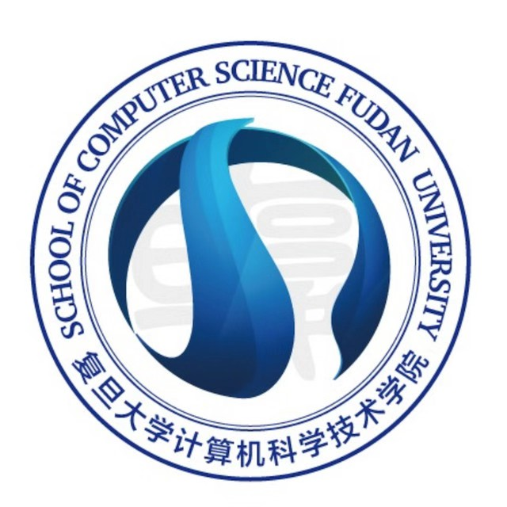

Recent News
Datasets
LVOS: A Benchmark for Large-scale Long-term Video Object Segmentation —— ICCV 2023
FERV39k: A Large-Scale Multi-Scene Dataset for Facial Expression Recognition in Videos —— CVPR 2022
Recent Reports
The Future of Tactile Dexterous Hand Grasping Robots
Bin Fang, Beijing University of Posts and Telecommunications
Progress in the Design of Tactile and Visual Sensors for Dexterous Manipulation
Jieji Ren, Shanghai Jiao Tong University
Visual navigation based on self-supervised learning of differentiable physics
Danping Zou, Shanghai Jiao Tong University
About Us
In recent years, the laboratory has obtained tens of million yuan of scientific research resources input, including the Ministry of education, the National Natural Science Foundation of China, the major science and technology projects of the Shanghai Municipal Science and Technology Commission, the 211 special project of Fudan University, and more than 30 university enterprise cooperation projects. It has produced a large number of original and independent intellectual property rights research results and has developed "Fudan I robot for autonomous mental development" "Fuwa", "Aijia No.1", "Haibao robot", "Chinese and Western medicine health management robot" and other six generations of intelligent service robots.
Awards
We have won the second prize of the 9th Shanghai Science and technology award for traditional Chinese medicine in 2019, the silver award of the international invention in 2018, the special award of the Romanian Academy of technology and Sciences, the grand prize in 2017 China International Industrial Exposition, the second prize of the technological invention of the Ministry of education, the second prize of Wu Wenjun's artificial intelligence science and technology progress award, the third prize of Shanghai Science and technology progress award, and the 2015 Suzhou science and technology leading talent.
Collaboration
Academy for Engineering & Technology
The Academy for Engineering & Technology (FAET) was established in January 2017. It aims to systematically integrate interdisciplinary and multidisciplinary cooperation based on the advantages of Fudan University's multidisciplinary basic research, aiming at the research and development of forward-looking, critical, and creative engineering and application technology-oriented to the major national needs.
School of Computer Science
In 1975, Fudan University established the Department of computer science. In 2008, the school integrated the strength of computer science and technology and established the College of computer science and Technology. The national demonstrative software college established in 2002 and the national security college established in 2011 all rely on the college to carry out school running work.
ZTE Corporation
ZTE is the world's leading provider of integrated communication and information solutions. The company provides innovative technology and product solutions for telecom operators and government and enterprise customers in more than 160 countries and regions so that users all over the world can enjoy voice, data, multimedia, wireless broadband, and other all-around communication.